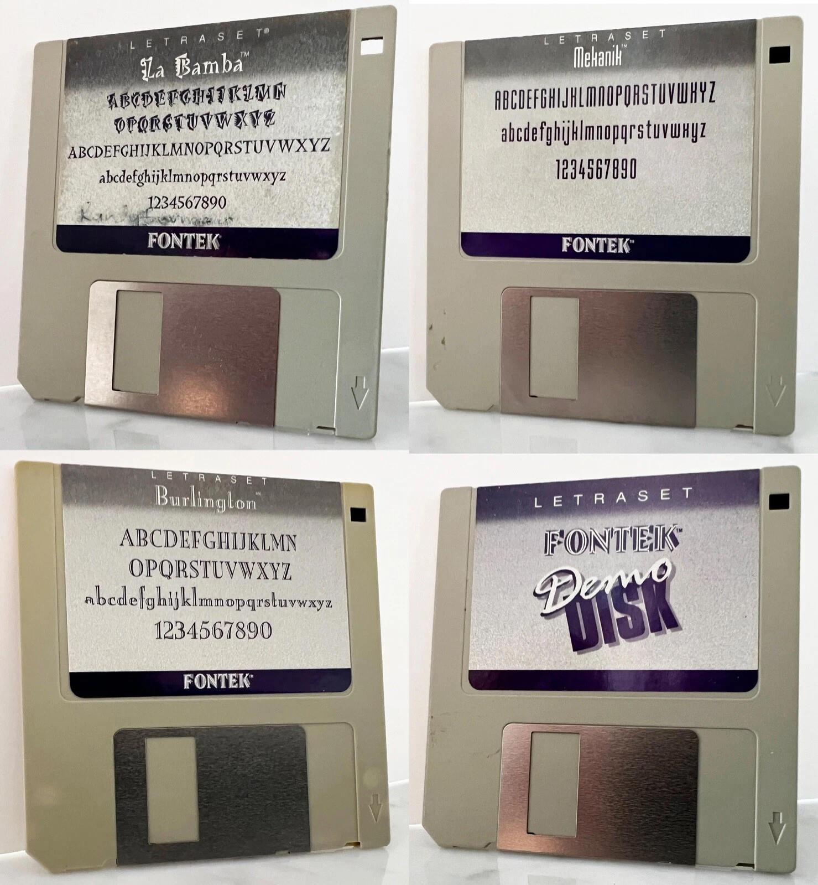

The Letters Before Us
Every letter on your screen passed through someone's hands. A scribe pressing a reed into wet clay. A punchcutter carving steel by candlelight. A foundry casting lead into trays. A software engineer plotting Bézier curves. A licensing agreement deciding who gets to use the result.
Typography has always been owned—by craftspeople, by companies, by technology, by law. The story of who owned it, and how that ownership shaped the letters we read, is one of the most quietly dramatic threads in design history. This guide follows that thread.
How the board works
We're using a Monopoly board as our map—not because typography is a game, but because ownership is the game. Each section is a square on the board:
- Properties = eras when different people controlled letterforms (punchcutters, foundries, tech companies, open-source communities).
- The Bank = the shifting power centers that decided who had access to type.
- Rent & Utilities = how access was gated at each stage (apprenticeships — machine licenses — per-seat software — subscriptions — free).
- Chance / Community Chest = the surprising turns that reshaped the rules.
What you'll walk away knowing
- How type was made and controlled in each major era—and why those eras still echo in today's tools and rules.
- The craft behind letterforms: anatomy, classification, what makes one cut different from another.
- How the type industry works today—from solo designers to global aggregators to open-source libraries.
- The practical licensing landscape: what the rules are, where they came from, and how to navigate them without surprises.
Why the ownership story matters for creatives
- Source shapes the letterform: Different foundries’ cuts of the “same” typeface have different metrics, features, and history.
- History explains the rules: Licensing terms that seem arbitrary make sense once you know how type went from metal to software.
- Craft and commerce are inseparable: Understanding how type is made helps you choose it well—and respect the people who make it.
The Floppy Disk Era
Back in the late '80s and early '90s, font file trading was a lot like swapping baseball cards or mixtapes. Designers would bring boxes of floppy disks to conferences and exchange typefaces—sometimes entire libraries—for the price of a coffee. It was such a low-tech and human way to exchange digital assets, but it was the primary way most agencies received new fonts to work with.

One famous story goes that a single floppy labeled "Swiss Army Fonts" made its way through dozens of agencies in New York, passed along so many times that no one could remember where it came from. The label was photocopied and taped until it was barely legible, but the fonts inside kept on circulating.
Typography may look serious on the page, but behind the scenes it once had a bootleg, DIY culture that feels closer to a garage band than a law office.
Collect $200 for passing GO. First property: how letters began as physical objects—and why owning type once meant owning actual metal.
Letters as Objects (clay — metal — early foundries)
Before type was software, it was stuff. Heavy, physical, expensive stuff. And whoever controlled the stuff controlled the words.
Marks in clay
The ownership story begins around 3100 BCE in Mesopotamia, where scribes pressed reed styluses into wet clay to create cuneiform — wedge-shaped marks that recorded trade, law, and literature. These weren't fonts, but they were the first repeatable writing systems, and the scribes who knew them held power: literacy itself was a controlled technology.
In China, woodblock printing (Tang dynasty, ~7th century CE) carved entire pages into wood for reuse. Then around the 11th century, Bi Sheng invented movable type from fired clay—individual characters that could be rearranged. The idea traveled slowly westward.
Gutenberg's revolution
When Johannes Gutenberg developed metal movable type in 15th-century Europe, he didn't just invent a printing method—he created a manufacturing system. Each letter required a steel punch hand-cut by a craftsman, struck into a copper matrix, which was then used to cast hundreds of identical lead sorts. The process was capital-intensive, skilled, and slow.
This is where ownership gets concrete. A "font" was literally a complete set of metal sorts in one size and style, stored in a wooden case. Buying type meant buying metal. Printers owned their type the way carpenters own their tools—it was inventory, investment, and competitive advantage. Copying meant re-cutting punches from scratch, a task that required years of training and its own workshop.
Scarcity as protection
For centuries, the sheer difficulty of making type was its own protection. You couldn't copy a competitor's letterforms without the skill to cut steel, the equipment to strike matrices, and the foundry to cast sorts. Piracy existed: enterprising printers would electrotype borrowed sorts to create knock-off matrices, but it was slow, expensive, and produced inferior results.
The first formal recognition that letterforms could be designed property came in 1842, when type founder George Bruce received U.S. Design Patent D1, the very first design patent ever issued, for a typeface. It protected appearance rather than function, foreshadowing a distinction that would matter enormously two centuries later.
Type History and Fun Facts
Property acquired. Next: the foundry age—when machines scaled production and companies became the new gatekeepers of type.
The Foundry Age (industrial scale — phototype)
By the late 19th century, type had outgrown the individual punchcutter's bench. Companies like American Type Founders (ATF), Linotype, and Monotype industrialized letter-making with hot-metal systems that could cast type at production speed. Ownership shifted from craftspeople to corporations—and access became a business relationship.
Machines as gatekeepers
Linotype machines cast entire lines of type from a keyboard, revolutionizing newspaper production. Monotype systems cast individual characters from punched paper tape, offering more flexibility for book work. Both required proprietary matrices (the molds), which meant you didn't just buy type—you bought into an ecosystem. Your foundry relationship determined what letterforms you could access.
This era also produced the first great house styles. Foundries weren't just manufacturers—they were design cultures. ATF's catalog featured showpiece display faces with ornamental swagger. Linotype's stable leaned toward the sturdy, readable workhorses that newspapers demanded. Monotype UK cultivated elegant book faces under the direction of Stanley Morison, who commissioned Times New Roman in 1931. Each house had a voice, and choosing a foundry meant choosing an aesthetic.
Phototype loosens the bond
In the mid-20th century, phototypesetting replaced metal with glass, film, and light. Letters could be scaled and composited without recasting, shifting work from foundry benches to darkrooms. The physical bond between type and machine loosened. Reproduction became faster, cheaper, and more portable, foreshadowing the digital revolution to come.
Classification takes shape
As the number of available typefaces grew from hundreds to thousands, the need to organize them became urgent. Classification systems like Vox-ATypI (adopted in 1962) gave designers a shared vocabulary for shopping catalogs, comparing “voices,” and making fast decisions. Understanding these categories isn't just academic—it's the foundation for recognizing what you're looking at and choosing type with intention.
The major classifications
- Serif — Letters with finishing strokes (feet) at the ends of stems. Subcategories include old-style (Garamond), transitional (Baskerville), and modern/didone (Bodoni).
- Sans-serif — Letters without serifs. Includes grotesque (Akzidenz), neo-grotesque (Helvetica), humanist (Gill Sans), and geometric (Futura).
- Slab serif — Heavy, block-like serifs with low stroke contrast. Think Rockwell, Clarendon, or Roboto Slab.
- Display / Decorative — Designed for headlines and large sizes, prioritizing impact over extended readability.
- Monospace — Every character occupies the same horizontal width. Essential for code, tabular data, and terminal interfaces.
House Rules: Designer Tip
Typeface names can map to many fonts. For example, "Garamond" might refer to different cuts by different foundries with different metrics. When matching layouts, confirm the foundry and the font file version—not just the style name.
Property developed. Next: the digital revolution—when type became software, ownership got complicated, and Steve Jobs changed the vocabulary forever.
Letters as Software (the digital revolution)
In the 1980s, type underwent its most radical transformation. Influenced by a calligraphy class at Reed College, Steve Jobs pushed the original Macintosh to ship with multiple digital fonts—named after cities like Chicago, Geneva, Monaco, and New York. For the first time, ordinary people could choose typefaces on a personal computer. Fonts became part of the product's personality—and the user's.
Typeface vs. Font
Typeface = the design (the shapes and system behind the letters).
Font = the software file that renders a typeface (and historically, a specific size/weight).
*For designers: yes, Helvetica 12pt is technically a different font than Helvetica 10pt. When type was cast in metal, a different tray meant a different font.
Why do we use the words interchangeably? We have Steve Jobs to thank. When Apple bundled typefaces with the Mac, every menu said Font. Whether because "font" sounded friendlier or because Jobs simply liked the word, the Mac normalized "font" as shorthand for both the software and the design.
Desktop publishing and the ownership rupture
With a Mac, a LaserWriter printer, and Aldus PageMaker, anyone could produce professional typography at home. Fonts weren't the guarded property of print shops anymore—they were files on a floppy disk. And files are easy to copy.
This created a fundamental tension that still defines the industry: type feels free, but it isn't. The law struggled to keep up. In most jurisdictions, the design of letterforms isn't copyrightable (they're treated as functional shapes), but the font file—the software that draws those shapes—is protected as code. Someone can legally redraw Helvetica and release it under a new name (see Arial), but copying the .otf file is infringement.
Anatomy of a letter
To understand what makes one typeface different from another—and why a foundry's specific cut matters—you need to see what designers actually design. Every letterform is built from a vocabulary of structural parts.
Bridge to ownership: when you license a font, you're not licensing a name—you're licensing a particular set of shapes, metrics, and engineering decisions.
Story beat: craft becomes code. The parts above become outlines, tables, and metrics in a file—exactly the things licenses and audits care about.
What's inside a font file?
Under the Hood
- Glyph outlines: Vector curves (quadratic or cubic Béziers) that define each character shape.
- Encoding: Mapping between Unicode code points and glyphs.
- Metrics: Advance widths, side bearings, ascender/descender, line gap—how text flows and wraps.
- Kerning: Fine spacing tweaks for pairs or classes (e.g., To, AV).
- OpenType tables:
GSUB(substitutions: ligatures, small caps),GPOS(positioning: kerning, marks),GDEF(glyph classes), and more. - Hinting: Instructions to improve rasterization at small sizes (critical on low-DPI screens).
- Variable axes (if variable): Continuous ranges like weight (
wght), width (wdth), optical size (opsz).
Desktop vs. Web formats
- Desktop: TTF/OTF — install on machines, use in apps.
- Web: WOFF/WOFF2 — compressed for browsers, often subsetted for performance. Key CSS:
@font-face,font-display,unicode-range,preload.
How shaping works (simplified)
- Text shaping: A shaping engine turns characters into the right glyphs, applies substitutions/positioning, and resolves language-specific rules.
- Rasterization: Outlines become pixels via anti-aliasing and hinting.
- Compositing: The result is painted to screen or sent to print.
Variable Axes
Weight vs. Width vs. Optical Size
- Weight (
wght) -
Thickness of strokes (light — black). Affects darkness and contrast.
Use for hierarchy, contrast on dark backgrounds, and readability at small sizes.
Typical range: 100–900. - Width (
wdth) -
Horizontal proportion (condensed — expanded). Changes character set width and letterfit—not the stroke thickness.
Use to fit copy without cranking tracking, or to meet tight UI constraints.
Typical range: 75–125 (percent). - Optical Size (
opsz) -
Design tuned to the size you're setting. Text sizes get sturdier details, looser spacing, bigger x-height; display sizes get finer details and tighter spacing.
Use text cuts for small sizes; display cuts for big headlines.
Typical range: 8–72 (points), font-dependent.
-
Don't fake bolding.
Why: browser-synthesized bold/italic distort counters, break kerning/hinting, and shift line breaks.
Try: use real weights/italics or variable axes; disable synthetics:font-synthesis: none; -
Width before tracking.
Why: tracking adds equal space and erodes rhythm; thewdthaxis preserves letterfit and kerning classes.
Try: nudge"wdth"(e.g., 95–98) first; keepletter-spacingsubtle (±0.5–1.5%). -
Let size drive
opsz.
Why: optical size tunes contrast, spacing, and details for legibility at each size.
Try:font-optical-sizing: auto;for body text; override withfont-variation-settings: "opsz" 12for tiny UI or36for display. -
Compensate when inverting.
Why: white-on-black makes strokes appear thinner due to glow/halation.
Try: +1 weight step (or +50 on"wght") and a touch more letterspacing (0.01–0.02em).
Note: If you set font-optical-sizing: auto, the browser drives opsz from font-size. To force a specific opsz, set font-optical-sizing: none and declare it in font-variation-settings.
OpenType Feature Lab (try toggles; edit the sample)
Mission: pick a font, toggle ligatures/small caps/figures, and type a few tests (fi fl ffi; 012345; AV). Notice which behaviors are design choices—and which are “features” in the file.
Office 0123456789 — affine office; efficient.
Find five fine ligatures: fi fl ffi ffl.
Try typing here to test features — 100% vs 1000% and zeros: 0 O
Bridge to practice: in the software era, type isn't just taste. It's also systems work—fallbacks, rendering, and readability. These two quick tools mirror real production checks.
Typography Tools
Fallback Stack Tester
Simulate how copy looks at different points in your stack.
Contrast Checker
Check WCAG contrast for text vs. background.
Property secured. Next: The Bank—who controls type today, and how to choose and pair typefaces with intention.
Who Controls Type Today
The story of ownership didn't end when type went digital—it fractured. Today, type lives in a complex ecosystem that spans solo designers working from home studios to multinational corporations managing libraries of thousands of families. Understanding who the players are helps you make better choices about where your type comes from.
The spectrum
Independent foundries
Small studios where designers draw, test, and ship typefaces directly. Foundries like Klim (New Zealand), Grilli Type (Switzerland), DJR (USA), and OH no Type Co. bring distinctive voices and deep craft. They typically sell direct licenses and set their own terms. Buying from an indie foundry means your money goes directly to the person who drew the letters.
Aggregators
Companies that collect many libraries under one roof. Monotype is the largest: over the last decade, it absorbed FontShop, URW, Hoefler&Co., and was taken private by HGGC in 2019. It consolidated e-commerce onto MyFonts and expanded into font management and compliance services. Aggregators offer convenience and enterprise solutions, but their scale can create tension with smaller foundries over pricing and control.
Platform providers
Google Fonts hosts 1,600+ families under the SIL Open Font License—free to use, embed, and redistribute. Adobe Fonts bundles broad access with Creative Cloud subscriptions. Both lowered the barrier to quality type, but neither replaced the need for licensing awareness: Adobe Fonts has its own usage terms, and even OFL fonts have rules (reserved names, attribution).
The open-source movement
The SIL Open Font License (OFL) reset expectations. Teams can prototype fast, ship globally, and localize without heavy procurement. But “open” doesn't mean ungoverned: keep attribution, respect reserved font names, document modifications, and version your builds.
Choosing and pairing type
Understanding where type comes from is the first step. The next is choosing it well. Good type pairing isn't about matching—it's about contrast with harmony. Pair typefaces that differ in structure (a geometric sans with a humanist serif, for example) but share proportion and rhythm. The sandbox below turns that idea into a quick experiment.
Supporting independent type designers
When you license from an independent foundry, you fund the people who draw the letters. When you choose open-source fonts, you benefit from a community that shares freely. Both models work—what matters is choosing intentionally. Budget for type the way you budget for imagery or music: plan a core set, add project-specific licenses when needed, and keep a line item for growth.
OFL Quick Guide
- Keep the OFL text with the font when you redistribute.
- Respect Reserved Font Names; rename derivatives and note changes.
- Log where/when you ship a font (web/app/server) just like any dependency.
Treat fonts like any other dependency: bundle licenses in your repo, track versions, and document where you ship them.
Bank visited. Next: the rules of the game today—licensing, jurisdiction, and what to do if a letter arrives.
The Rules of the Game (licensing & practical guardrails)
Every era of type ownership came with its own access rules. Today's rules are encoded in licenses—contracts that define what you can do with a font file, where, and at what scale. They're not as dramatic as the ownership shifts that came before, but they're the part of the story most likely to affect your daily work.
Deed Cheat Sheet (common rights you'll see)
- Desktop (install)
- Who can install the font file and on how many machines (sometimes "seats," often "installs").
- Web (page views / domains)
- Serving fonts via CSS; commonly tied to domains and monthly traffic tiers.
- App / eBook (embedding)
- Packaging the font inside something you distribute; usually a separate right from desktop/web.
- Server / broadcast
- Rendering on a server (images/video), broadcast packages, or other "output at scale" scenarios.
- Vendors / agencies
- Whether you can share the file with partners (often "they need their own license" unless explicitly covered).
- Modifying / subsetting
- Some EULAs allow it, some restrict it; don't assume because it's technically easy.
If you're unsure which deed you have, start with the invoice/EULA and map the planned channel to a clause before you ship.
Jurisdiction at a glance
| Region | Design protection | Software (font file) | Key detail |
|---|---|---|---|
| United States | Not copyrightable (Eltra v. Ringer, 1978) | Protected as software (Adobe v. Southern, 1998) | Design patents possible (D1, 1842) but rarely used today |
| Europe (EU) | Registered Community Design (up to 25 years) or Unregistered (3 years) | Protected as software | EUIPO provides typeface-specific filing guidance |
| United Kingdom | CDPA ss. 54–55 (design right, time-limited) | Protected as software | Specific typeface provisions in copyright law |
House Rules: Quick Guardrails
- Count installs, not people: a "1–5 users" license usually means machines/instances, not headcount.
- Page views matter: web licenses often meter monthly views; spikes can push you out of scope.
- Embedding — installing: app/eBook/broadcast use is often a separate right from desktop/web.
- Vendors/partners: sharing a font with an agency or printer typically requires them to hold a license.
- Rename — permission: renaming a file doesn't change its license (or make a copy legal).
General information, not legal advice. Check your actual license terms.
House Rules: Ops Starter Checklist
- Central catalog + receipts/EULAs; SSO-gated access.
- Per-channel runbooks (desktop, web, app, server, broadcast).
- CI guardrails: no app build without embed rights; CSS lint for forbidden hosts.
- Change control: deprecate fonts with replacements and a sunset date.
- Name a "font owner": one person/team buys, tracks, and renews.
If a Compliance Letter Arrives
General information for creative teams — not legal advice. Confirm specifics with counsel and your license agreements.
First 48 hours — checklist
- Acknowledge, don't admit.
Reply that you've received the notice and are reviewing. - Ask for specifics.
Request exact fonts/families, versions, dates, URLs/apps, and how they detected usage. - Freeze risky usage.
If you suspect out-of-scope use, stop serving/embedding immediately. - Gather paperwork.
Pull invoices/EULAs, purchase emails, subscription status, and internal approvals. - Inventory scope.
Count installs, page-view tiers, app embeds, and vendor/partner sharing. - Assign a point person.
Route all replies through one owner; keep a dated log. - Plan remediation.
Decide: (a) true-up, (b) replace with licensed or OFL family, (c) remove and document.
Do
- Respond promptly and professionally.
- Centralize all communications.
- Verify against your EULAs and receipts.
- Remediate quickly and document changes.
Don't
- Admit wrongdoing before review.
- Ignore deadlines or go silent.
- Rename or clone font files to "work around" terms.
- Share internal files broadly (least-privilege).
House Rules: Inherited Brand Assets
When you inherit a brand, verify rights you actually hold:
- Rights by channel: desktop, web, app/eBook embedding, server/broadcast, vendor sharing.
- Scope: seat counts, installs, domains/apps, regions/term limits.
- Paper trail: invoices/EULAs, who purchased, where installed/served, which vendors received files.
"We thought the agency handled it" is the #1 root cause of surprises.
Rent paid. Final square: where the ownership story goes next.
The Future of Letters
Variable fonts: one file, infinite possibilities
Variable font technology—a single file containing continuous ranges of weight, width, optical size, and custom axes—represents the most significant technical shift since type went digital. Instead of loading six separate files for different weights, a single variable font covers the entire spectrum. This changes performance budgets, design systems, and the economics of licensing. It's the frontier of what type can do.
Expanding the alphabet
For most of its history, the ownership story has centered on Latin scripts. That's changing. Projects like Google Noto aim to cover every Unicode character in every writing system—from Arabic to Ethiopic to CJK—under open licenses. As digital design becomes genuinely global, the question of "who owns the alphabet" extends to scripts and communities that have been underserved for centuries.
The craft continues
Type design is not a solved problem. New designers bring new perspectives—drawing letterforms that reflect cultures, subcultures, moods, and movements that didn't exist when the classic families were cut. Every year, the range of available expression grows. The tools get better. The communities get more diverse. The letters keep evolving.
From clay seals pressed by Mesopotamian scribes, to metal sorts locked in composing sticks, to software gated by EULAs, to open files shared freely across the world—the story of who owns the alphabet is still being written. Every time you choose a typeface, you become part of that story.